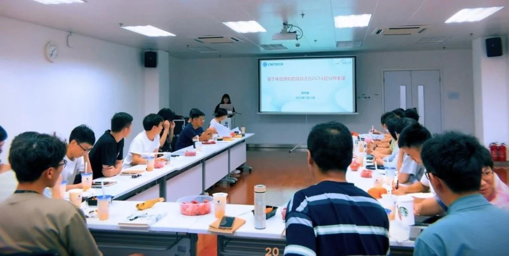
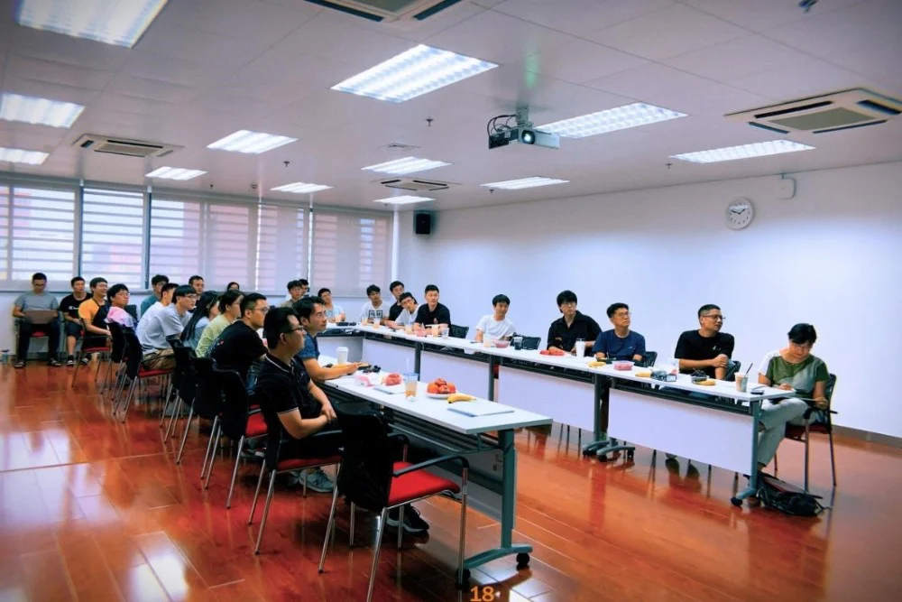

2022年7月13日上午，刘江老师、Risa研究员、方建生老师一行从深圳来到Imed宁波开展座谈会。Risa老师作为访问研究员，长期致力于将科学研究和产业深度结合，实现“研究产品-厂商”的合作共赢。方建生老师目前跟随刘江老师在南方科技大学从事图像检索方面的研究，具有很强的科研和工程能力。
上午10时许，刘老师一行来到办公室与大家亲切交谈，各位新入组同学也一一向刘老师介绍了自己。现场氛围温馨融洽，掌声不断，充满了欢声与笑语。大家对刘老师一行的到来表示热烈的欢迎。
午餐休息的时间后，下午13:30开始了组里例行的组会报告环节。现场有四位组员分别做了精彩的研究课题汇报。郝华颖同学介绍了自己在基于稀疏感知的域自适应OCTA超分辨重建方面的研究进展。刘老师在听取报告以后，对郝华颖同学的专业素养给予高度赞扬，并提出了自己的一些想法和思考。现场气氛紧张而活跃，不同的思维发生碰撞，迸发出智慧的火花。与此同时，刘老师分享了自己多年科研经验总结出来的，从临床问题到核心问题抽象成数学问题再到算法的“1234”法则，令大家获益匪浅。后面，沙登峰同学，方利鑫同学，刘守岳同学分别分享了自己的课题研究进展，现场展开了激烈的讨论。

之后大家开始座谈会。刘江老师满怀深情地感慨道，人的智慧是挑自己想要的东西，而不是拿着盘子里的东西。在知识与技术快速更迭的今天，各项发展日新月异，要勇于否认自己，将以前成功的经验清零，不囿于过去。并勉励大家，要尽早地明确自己的方向，经常reset,不要让经验成为成功路上的绊脚石。方建生老师补充道，imed宁波有很多值得我们学习的地方，自己非常喜欢imed的发展模式。imed是一个充满活力和激情的团队，每一位成员都应该在团队内形成自己的标签，利用合力达到自我价值的实现。赵一天老师笑容洋溢地鼓励大家要多尝试不同的事物，厚积薄发，努力拼搏。各位老师的精彩发言，给大家上了生动又深刻的一课。

会后，imed宁波团队负责人赵一天老师对此次座谈会做了总结。他说：“非常欢迎刘江老师一行来到imed宁波指导座谈。刘老师与大家的物理距离虽然很远，但是心却很近。今后有任何需要提供的帮助，imed宁波团队都将鼎立相助。”现场掌声四起，群情激昂！
我们非常期待下一次老朋友的重逢！
作者；徐克意